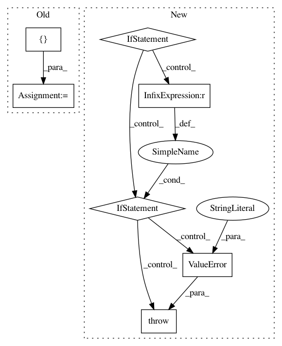

b5c8bdd81be77eac5434a476f62c5bdef56f1838,texar/modules/embedders/position_embedders.py,SinusoidsPositionEmbedder,__init__,#SinusoidsPositionEmbedder#Any#Any#,251
Before Change
scaled_time = tf.expand_dims(positions, 1) \
* tf.expand_dims(inv_timescales, 0)
signal = tf.concat([tf.sin(scaled_time), tf.cos(scaled_time)], axis=1)
signal = tf.pad(signal, [[0, 0], [0, tf.mod(dim, 2)]])
self.signal = signal
def default_hparams(self):
Returns a dictionary of hyperparameters with default values
After Change
)
self.inv_timescales = inv_timescales
if self._cache_embeddings:
if position_size is None:
raise ValueError(
""position_size" must not be None when "
""cache_embeddings" is set to True"
)
positions = tf.to_float(tf.range(position_size, dtype=tf.int32))
signal = self._compute_embeddings(positions)
self.signal = signal
@staticmethod
def default_hparams():
Returns a dictionary of hyperparameters with default values
We use a geometric sequence of timescales starting with
In pattern: SUPERPATTERN
Frequency: 3
Non-data size: 7
Instances
Project Name: asyml/texar
Commit Name: b5c8bdd81be77eac5434a476f62c5bdef56f1838
Time: 2019-07-01
Author: haoranshi97@gmail.com
File Name: texar/modules/embedders/position_embedders.py
Class Name: SinusoidsPositionEmbedder
Method Name: __init__
Project Name: keras-team/keras
Commit Name: 023331ec2a7b0086abfc81eca16c84a1692ee653
Time: 2017-02-09
Author: francois.chollet@gmail.com
File Name: keras/layers/core.py
Class Name: TimeDistributedDense
Method Name: build
Project Name: ray-project/ray
Commit Name: d8f5b522655f2b848ba20817dd18d6e4aefb8a42
Time: 2020-04-10
Author: ed.nmi.oakes@gmail.com
File Name: python/ray/serve/api.py
Class Name:
Method Name: create_backend